10. SLAM & 3D Reconstruction
KinectFusion, TSDF, ICP pose tracking, loop closure, back-projection, Marching Cubes
1. 3D Data Capturing Challenges
A single sensor frame captures only partial scene data — one viewpoint always leaves occlusions (objects behind other objects are invisible). Therefore the sensor must be carried around the scene — by hand, robot, or UAV — to capture the complete 3D structure.
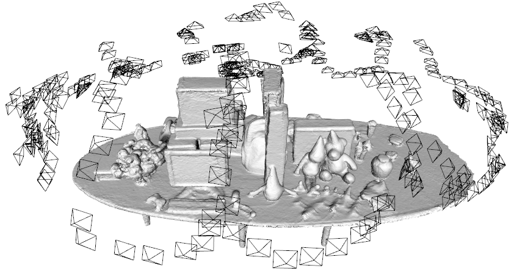
The Registration Problem
Each captured frame lives in its own local coordinate system. Registration transforms all frames into one common coordinate system (typically the coordinate system of the first frame). To do this, we need:
- The sensor pose (position + orientation) at every moment, described by the extrinsic matrix.
- Accurate timestamps for each sample.
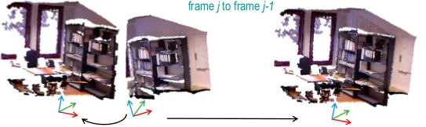
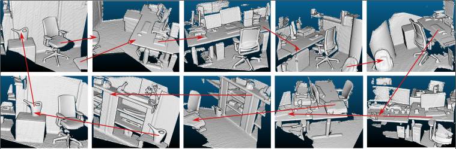
2. SLAM: Simultaneous Localization and Mapping
SLAM originated in robotics in the 1960s, primarily for sensor localization with 2D floor maps. When adapted to 3D reconstruction, both localization AND mapping accuracy become critical — and typically there is no wheel odometry and no GPS data.
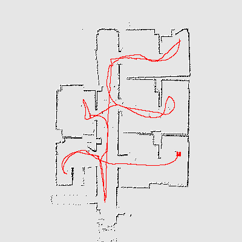
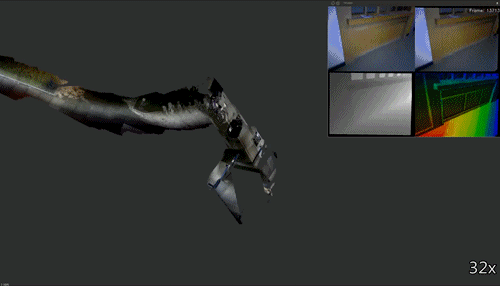
The SLAM Paradox (Chicken-and-Egg Problem)
| Part | Description |
|---|---|
| Mapping | Building the 3D model of the environment |
| Localization | Determining where the sensor is in the map |
To build a map we must know our position; to determine our position we need a map. Solution: alternate and jointly optimize between the two steps. Start with a rough estimate from the first frame, then iteratively refine both map and pose.
3. SLAM Types and Landmark Requirements
| SLAM System | Sensor | Key Method |
|---|---|---|
| EKF SLAM | Mono camera | Extended Kalman Filter |
| ORB-SLAM | Mono / Stereo / Depth | Sparse ORB feature landmarks |
| RGBD SLAM | Depth sensor | SURF features as landmarks |
| DTAM | Mono camera | Dense depth from Structure-from-Motion |
| SLAM6D | LiDAR | ICP for tracking |
| RTAB-Map | Depth sensor | Popular, also available in ROS |
| COLMAP | Mono / Stereo | Recommended for mono/stereo sensors |
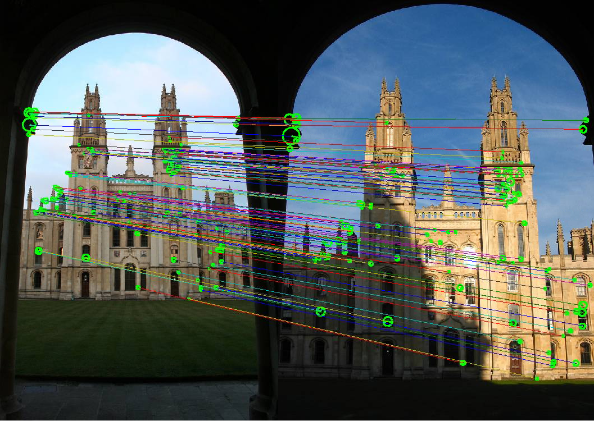
Requirements for SLAM Landmarks
- Easily re-observable — can be detected again when revisiting the same area.
- Distinguishable — individual landmarks must be discriminative.
- Sufficient quantity — hundreds or thousands per image.
- Stationary — landmarks must not move (dynamic objects are problematic).
- Low computation cost — real-time performance required.
- Generality — work across various image types and conditions.
4. The Generic SLAM Pipeline
The SLAM processing loop consists of:
- Initialize coordinate system at the first scan.
- Store first sample data into the 3D model.
- Detect and create landmarks visible in the first scan.
-
Main loop:
- Move the sensor; obtain the next scan.
- Re-observe landmarks: find already-known landmarks in the new scan.
- Compute change in position/orientation from landmark position changes.
- Estimate current sensor pose.
- Update the 3D model with current sample data.
- Check for loop closure.
- If loop closure detected: correct poses and model.
- Repeat from (a) or finish.
5. Drift and Loop Closure
The Drift Problem
Pose estimation error at each frame is unavoidable due to image noise/blur, insufficient or occluded landmarks, and less than 100% accuracy in finding pairwise correspondences. This error accumulates over time, causing drift: the estimated path diverges from the actual path, and newly captured data integrates into the model at incorrect locations.
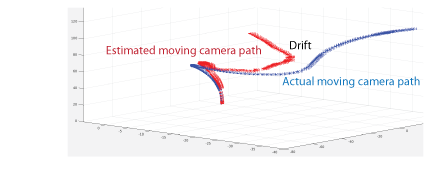
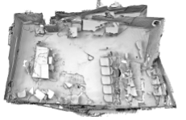
Loop Closure
Loop closure detects when the sensor revisits a previously seen scene (frame $Z$) and corrects accumulated drift.
- Correct the current sensor pose using the known pose of frame $Z$.
- Elastic trajectory correction: smoothly correct all intermediate poses from the current frame back to frame $Z$.
- Re-update the 3D model with correctly positioned 3D data from the corrected poses.
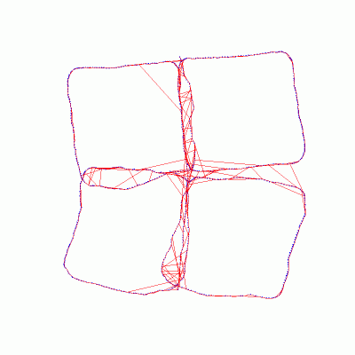
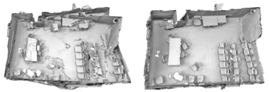
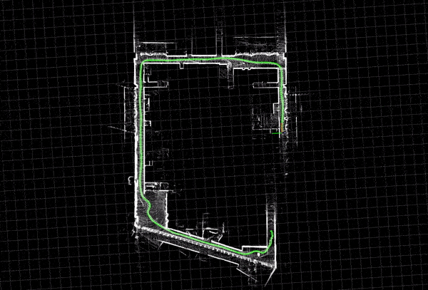
Bundle Adjustment
Bundle adjustment jointly optimizes both the 3D map points and the camera poses, making them mutually consistent with observed sensor data. It minimizes the overall reprojection error across all frames and landmarks simultaneously.
Scanning trajectories must be carefully planned so that the sensor revisits previously seen scenes to enable loop closure detection. The Enigma project example demonstrates a planned scanning path through a building, ensuring the sensor revisits corridors for reliable loop closure.
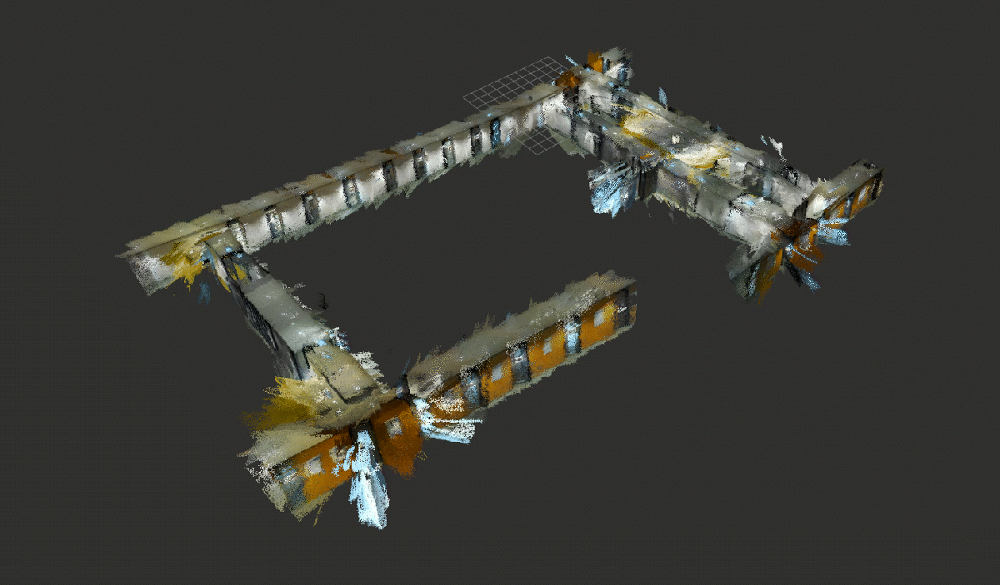
6. KinectFusion Overview
KinectFusion is an RGB-D SLAM system for 3D reconstruction using a Microsoft Kinect or Asus xTion depth sensor. It has two interleaved components:
| Component | Description |
|---|---|
| Mapping | Build a 3D surface model from depth frames with estimated camera poses |
| Localization | Given a 3D model, estimate the current camera pose by aligning the current depth frame |
KinectFusion Pipeline Steps
- At the first Kinect frame, create a coordinate system (world origin = sensor origin of first frame).
- Initialize a voxel grid (e.g., $3 \times 3 \times 3$ m, $256^3$ voxels, voxel size $\approx 1.2$ cm).
- Back-project depth data into the voxel grid using TSDF representation.
- Detect and store landmarks (vertices and normals from TSDF).
- For each new frame: use ICP to align new depth data to the existing model.
- Update the TSDF voxel grid with new depth data.
- Repeat.
Depth Sensor Specifications (Kinect / xTion)
KinectFusion uses a structured light depth sensor with an IR pattern emitter, an IR sensor, and an RGB sensor. An internal ASIC generates depth data from IR sensor correlation against a known speckled light pattern, calibrated for 2048 depth planes.
| Parameter | Value |
|---|---|
| Resolution | 640 × 480 depth image |
| Frame rate | 30 fps |
| Pixel depth values | 0 to 255 (maps to 0–329 depth units) |
| Maximum range | 0.5–12 meters |
| Efficient (low noise) range | 0.5–2.5 meters |
7. TSDF Voxel Grid Representation
The Truncated Signed Distance Function (TSDF) encodes 3D geometry as a scalar field over a voxel grid. For each voxel at position $g$:
Values transition from +1 (outside/in front of surface) through 0 (on the surface) to -1 (inside/behind surface). The function is truncated (clamped to $[-1, +1]$) within a narrow band $\delta$ around the surface. The zero-crossing (sign change from positive to negative) indicates the surface location.
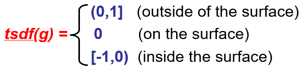
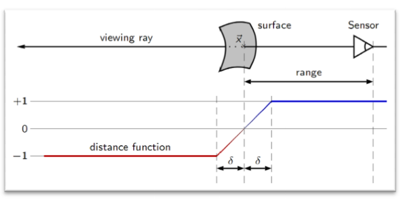
Voxel Grid Initialization
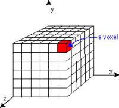
- At the first frame, initialize a cube of voxels in front of the sensor.
- Example: $3 \times 3 \times 3$ m volume, $256^3$ voxels, each $\approx 1.2$ cm.
- All voxel values initialized to $-1$.
A 5×6 slice of a TSDF grid (columns left to right = moving away from sensor):
| -1 | -1 | 0 | 1 | 1 |
| -1 | -1 | -1 | 0 | 1 |
| -1 | -1 | 0 | 1 | 1 |
| -1 | 0 | 1 | 1 | 1 |
| -1 | 0 | 1 | 1 | 1 |
| -1 | -1 | 0 | 1 | 1 |
The iso-surface (TSDF = 0 column) traces the 3D geometry surface.
8. Back-Projection: Depth Pixels to 3D Points
Each valid depth value $D(\mathbf{u})$ at pixel $\mathbf{u} = (x, y)$ provides a 3D point $\mathbf{v}$ in camera coordinates:
where $d$ = depth value at pixel $(x, y)$, $K$ = intrinsic matrix of the IR camera, $(x, y)$ = 2D pixel coordinates, $(X, Y, Z)$ = resulting 3D vertex in camera coordinates.
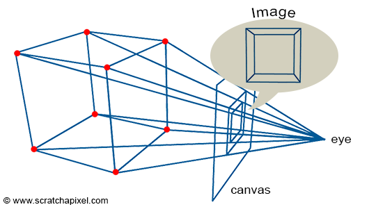
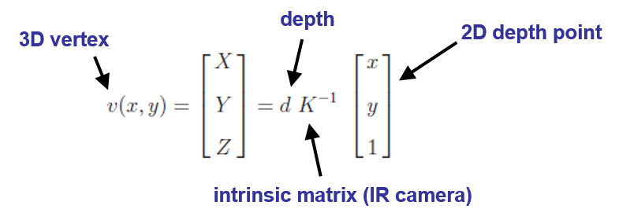
The Intrinsic Matrix $K$
| Direction | Equation | Purpose |
|---|---|---|
| Projection (3D to 2D) | $\mathbf{u} = K \cdot \mathbf{v} / Z$ | Projects a 3D point onto image plane |
| Back-projection (2D to 3D) | $\mathbf{v} = d \cdot K^{-1} \cdot \tilde{\mathbf{u}}$ | Lifts a depth pixel back to 3D space |
General Case: Camera Not at Origin
When the camera coordinate system is not aligned with the world coordinate system:
where $T_{g,k}$ is the extrinsic matrix (pose) of the camera at time $k$ relative to the global coordinate system $g$.
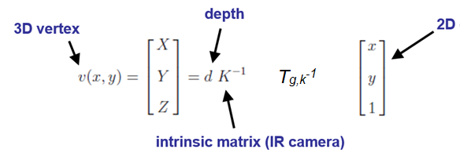
9. ICP Pose Tracking (Iterative Closest Point)
When the sensor moves to a new position, we need to estimate its new pose $T_{w,k}$. ICP aligns the vertices of the new depth frame with the vertices of the previous frame (or the global 3D model).
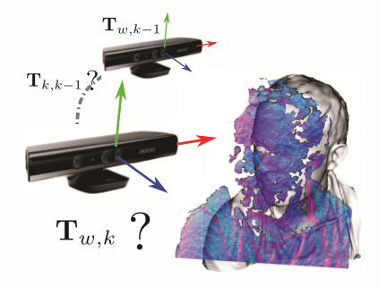
Key Observations
- Every pixel of a depth frame is a 3D vertex in its own coordinate system.
- At 30 fps, there is only small motion between consecutive frames (33 ms apart).
- Small motion implies small distances between corresponding vertices of neighboring frames.
- This makes point-based alignment feasible: closest points correspond.
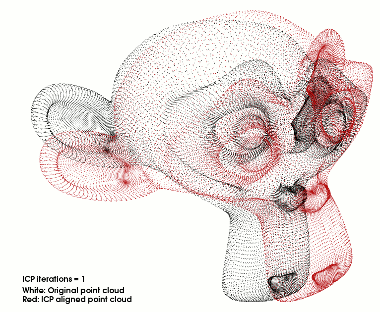
Camera Pose: The Extrinsic Matrix
where $R_{g,k} \in \mathbb{R}^{3 \times 3}$ is the rotation matrix and $\mathbf{t}_{g,k} \in \mathbb{R}^3$ is the translation vector at time $k$, both relative to the global frame $g$. A point $\mathbf{p}_k$ in camera coordinates transforms to world coordinates as $\mathbf{p}_g = T_{g,k} \cdot \mathbf{p}_k$.
Individual rotation matrices around each axis:
Combined rotation: $R = R_Y \cdot R_Z \cdot R_X$ — 9 parameters determined by 3 angles $A$, $B$, $C$.
Landmarks in KinectFusion
The TSDF voxel grid defines landmarks as:
- Vertices: Grid cells with TSDF $\approx 0$ (on the surface).
- Iso-surfaces: Continuous surface between positive and negative TSDF values.
- Normals: Surface normal vectors computed via cross product of neighboring surface points: $$\mathbf{n} = (\mathbf{v}_1 - \mathbf{v}_0) \times (\mathbf{v}_2 - \mathbf{v}_0)$$
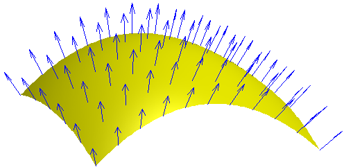
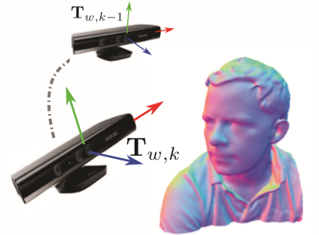
10. Computing the Pose Transform (R, t)
Given current-frame vertices $\{\mathbf{p}_i\}$ and previous-frame vertices $\{\mathbf{q}_i\}$, find $R$ and $\mathbf{t}$ that minimizes:
Centroid-Based Approach (3 point pairs)
Step 1: Compute centroids
Theorem: If $(R, \mathbf{t})$ is optimal, then $\{\mathbf{p}_i\}$ and $\{R\mathbf{q}_i + \mathbf{t}\}$ share the same centroid.
Step 2: Center the point sets
After centering, $\mathbf{t}$ vanishes from the equations, allowing us to solve for $R$ independently.
Step 3: Solve for $R$ — using 3 point pairs: $\mathbf{p}'_i = R \cdot \mathbf{q}'_i$ gives $3 \times 3 = 9$ scalar equations for the 9 entries of $R$.
Step 4: Recover $\mathbf{t}$
With 4 corresponding pairs, solve $\mathbf{p}_i = R \cdot \mathbf{q}_i + \mathbf{t}$ directly. Each pair gives 3 equations:
$4 \times 3 = 12$ equations for $9 + 3 = 12$ unknowns ($R$ and $\mathbf{t}$). The system is exactly determined.
11. RANSAC within ICP
RANSAC (Random Sample Consensus) is used within ICP to find the best transformation while being robust to outliers (incorrectly matched point pairs).
- Find corresponding points by Euclidean distance between current frame and model vertices.
- Select 4 corresponding point pairs for the current RANSAC iteration.
- Find rotation and translation $[R|\mathbf{t}]$ for these 4 samples.
- Apply the found $[R|\mathbf{t}]$ to all point pairs.
- Compute the total alignment error: $$E = \sum_{i=1}^{N} \|R \cdot \mathbf{q}_i + \mathbf{t} - \mathbf{p}_i\|^2$$
- If error exceeds the threshold: select another 4 pairs, run another iteration.
- Re-iterate until the error converges below the threshold. Best $[R|\mathbf{t}]$ (lowest error across all iterations) is the final result.
12. Updating the TSDF Model
After finding the camera pose $T_{g,k}$ via ICP, the new depth frame is integrated into the TSDF voxel grid using a weighted average:
Weighted averaging achieves noise reduction: each new observation refines the surface estimate. It allows incremental integration without storing all individual frames, and more observations of a voxel produce a more accurate surface location.
Since each Kinect frame contains both depth and RGB data, the voxel grid can also store RGB values of valid depth pixels. RGB values are collected by weighted averaging, and these weighted RGB values are later used to texture the 3D model.
13. Rendering via Ray-Casting
To render a view of the 3D model from any virtual camera position, ray-casting traverses the TSDF voxel grid:
- Define a virtual camera position and orientation.
- For each pixel $(u, v)$ of the output image:
- Cast a ray from the optical center through pixel $(u, v)$ towards the voxel grid.
- Traverse voxels along the ray, reading their TSDF values.
- Detect the first sign change in the TSDF (positive to negative) — this is the surface.
- Record the depth $d$ (camera-to-surface distance) for that pixel.
- After all pixels are processed, the depth values form the rendered depth image.
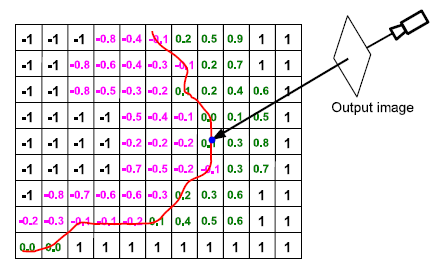
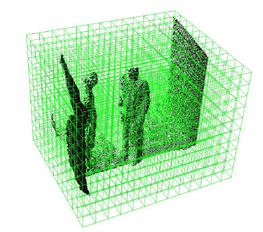
14. Marching Cubes
Marching Cubes is an algorithm that extracts a triangular mesh (iso-surface) from a scalar field like TSDF.
2D Concept (Marching Squares)
In 2D, each grid cell has corners that are either inside (negative TSDF) or outside (positive TSDF) the surface. The surface boundary passes between positive and negative grid points. The algorithm "marches" through each cell and determines the surface configuration based on the sign pattern of the corners.
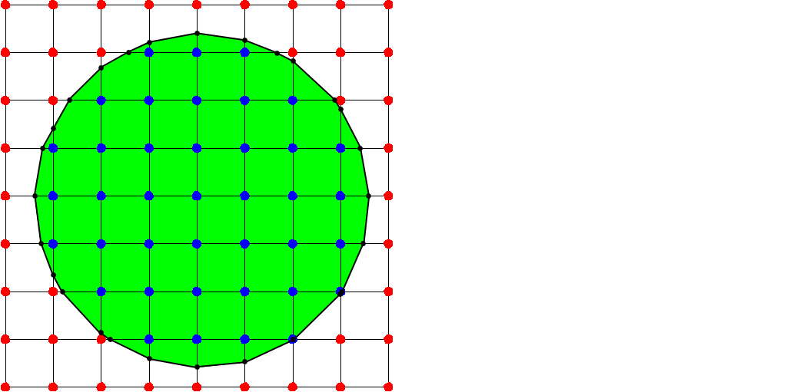
3D Marching Cubes
Each cube has 8 corners, each either inside or outside the surface. This gives $2^8 = 256$ possible configurations, which reduce to 15 unique cases by symmetry.
For each cube in the voxel grid:
- Classify each of the 8 corners as inside ($-$) or outside ($+$) based on TSDF sign.
- Look up the corresponding triangle configuration from a precomputed table.
- Interpolate exact vertex positions along edges where the sign changes.
- Output the triangles for that cube.
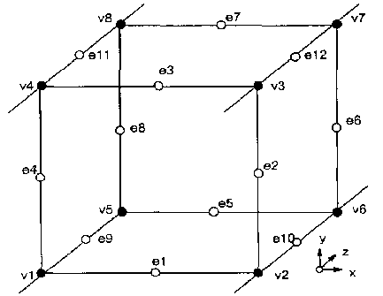
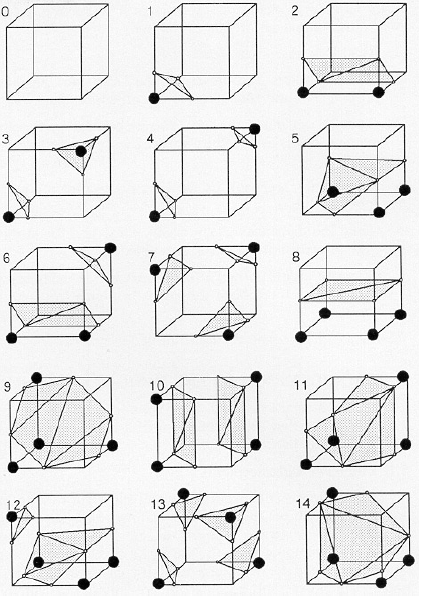
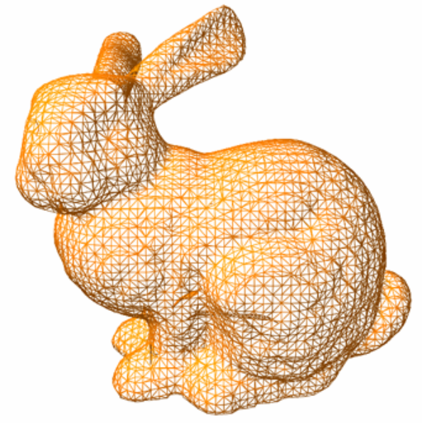